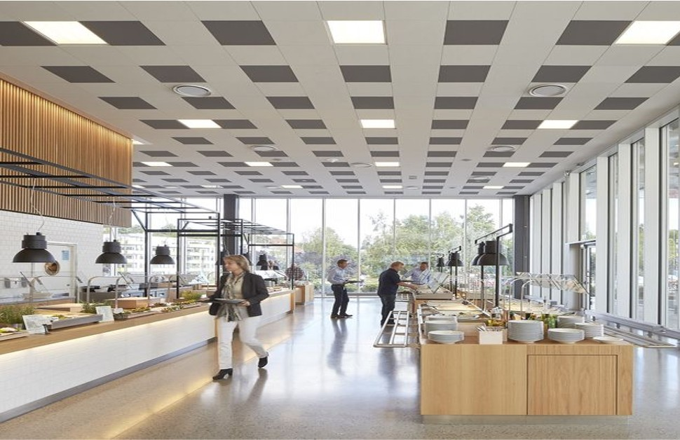

Online Canteen Ordering System is a cutting-edge solution meticulously crafted to revolutionise the dining experience within the Unilever workspace. By employing a comprehensive business analysis approach, including Stakeholder Analysis, RACI Matrix, SWOT Analysis, Process Flow Mapping and collaboration tools like Jira and Confluence, this project is strategically designed to streamline and enhance the food ordering process for employees


Sunshine Resort,a high-end beachfront hotel management company, aims to improve its customer service and overall performance.They've gathered data on bookings, cancellations, customer preferences and revenue to gain deeper insights. As the analyst, I provided data-driven recommendations to help enhance guest experiences, optimise hotel operations and maximise revenue for Sunshine Resort.

Data-Driven insights using Excel and Power BI:
British Airways, a global airline synonymous with excellence, aims to boost customer satisfaction and retention. As a business analyst, I utilised Power BI for a thorough analysis, offering valuable insights and actionable strategies to enhance services and understand crucial customer factors.

Customer behaviour analysis using Microsoft Excel: ABC Retail wanted to understand how customers use their online store better. I used Microsoft Excel to analyze this. The goal was to improve the online shopping experience and make more money. The project found insights to boost sales and enhance the overall success of the online store.

Dashboard Analysis using Microsoft Power BI: MaxCorps Electronics, a mid-sized electronics retail company with operations spanning multiple regions, is currently facing challenges in its sales and shipping operations. At MaxCorps Electronics, I, as part of the Business Analysis Team, used Power BI to tackle sales and shipping challenges. Our goal was to enhance overall performance by extracting insights from the dataset. The analysis resulted in actionable recommendations for substantial improvement.

Tech Haven Electronics is a popular electronics store in the city. As a Business Analyst, I used SQL to analyse their data for improvements. I created a database and looked at customer details for each sale, found products never purchased and got info on products and sales, including prices and quantities. This helps Tech Haven make smart decisions for better customer service and business growth.
This notable project involved creating an AS-IS process flow to depict the reimbursement journey for employee travel expenses. Leveraging Lucidchart's capabilities, I meticulously outlined each step, providing a clear and detailed representation of the existing process. This visualization not only demonstrates my skills in process mapping but also highlights my commitment to enhancing organizational efficiency through clear and accessible documentation.